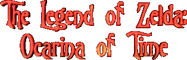
Tout a commencé le 21 février 1986 lors de la sortie de la légende de Zelda le premier épisode de cette série mythique. A l'époque le jeu avait réussi à faire l'effet d'une bombe! ce n'est pas difficile à comprendre vu l'intérêt du jeu et et sa superbe réalisation. Même si il paraît ridicule aujourd'hui, ce jeu a impressionné à sa sortie. Bref le succès et l'interêt du jeu n'est pas nouveau pour la série mythique de Miyamoto, imaginez : ce jeu fêtera bientot ses treize ans!
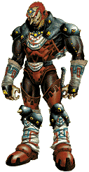
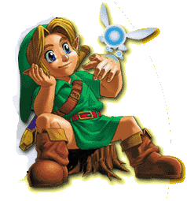
Un peu moins d'un an plus tard, le 14 janvier 1987, Zelda 2: the adventure of link sort déja. Plus axé action qu'aventure ce nouveau zelda se déroule en scrolling horizontal. C'est d'ailleur pour cette raison que zelda 2 a eu moins de succès que le premier volet, ce qui ne pénalise en rien sa qualité, car ce zelda comme tout le reste de la série reste une référence. Le soft ne prend pas une référence chronologique par rapport au premier, il ne peut pas réellement être associé à la série, c'est un peu comme dans les manga une sorte d'OAV de la série. En fait au début de l'histoire Impa vient voir link et lui demande d'aider zelda car celle-ci est à nouveau en danger. Cette fois-ci, elle seule connaît le pouvoir de la triforce. Un mauvais prince cherche à s'emparer du secret, et il tente de persuader la princesse de lui confier mais celle-ci refuse et subit un châtiment de la part d'un des mages du prince, il la condamne à un sommeil de plusieurs jours suivi d'une mort certaine. Seul remède : la triforce. Link va se lancer une fois de plus dans l'aventure pour retrouver la relique et une fois de plus sauver la princesse. Comme vous vous en doutez l'aventure est loin d'être de tout repos, et le magicien ne désire pas seulement la triforce, il veut aussi le sang de Link qui d'après lui est le seul moyen de relever Ganon d'entre les morts... Trois ans et demi plus tard la suite de legend of zelda sort. Véritable suite de "the legend of zelda", Zelda 3 a link to the past devient rapidement un des meilleurs jeux de la snin. A sa sortie, le titre fait l'effet d'une bombe atomique dévastant tout sur son passage. Le plus incroyable c'est qu'après 11 ans la série des zelda fait toujours sensation, tous les pros s'accordent à dire qu'il fait partie des meilleurs softs jamais sortis et ce, toutes consoles confondues. Si vous possédez encore votre snin alors vous vous Devez de posséder cette pure merveille. L'histoire de Zelda 3 débute en fait à la fin du premier épisode, la princesse Zelda est sauvée mais une nouvelle menace va faire son apparition. Suivant une ancienne légende, une terre contiendrait un pouvoir d'or qui permettrait à quiconque pourrait s'en emparer une puissance exeptionnelle. Beaucoup d'ambitieux tentèrent de s'en emparer mais personne ne revint vivant. Un jour une puissance diabolique surgit de la terre, aussi le roi ordonna t-il à sept sages de sceller la terre. Le temps passa....Jusqu'au jour où un mystérieux sorcier nommé Aghanim vint à hyrule pour fendre le sceau. Grace à sa magie, il fit disparaître, un à un les 7 sages et le bon roi. Il ne restait alors plus qu'à sacrifier la princesse Zelda et le sceau serait détruit...ce qui aurait de graves conséquences. Heureusement, Zelda réussi à prévenir link grace à ses pouvoirs de télépathie, elle lui apprend ainsi le danger qui la menace...Il ne reste que peu de temps pour la sauver et pour de ce fait empêcher Aghanim de détruire le sceau...
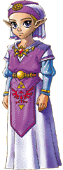
Deux ans plus tard, les joueurs de Game boy ont eu eux aussi droit à leur Zelda (zelda links awakening). Un soft incroyable que l'on peut considérer comme l'un des meilleurs de la petite portable de nintendo. L'esprit de l'original étant conservé, alternant scènes de dessus comme dans zelda 3 et scrolling horizontal comme dans le 2. Un must à posséder absolument si ce n'est déja fait! A la suite d'une incroyable tempête, le bateau de Link s'échoue sur la plage d'une île mystérieuse. Ici point de zelda ou de royaume d'hyrule, Link suit son propre destin. Le début de l'histoire présente notre héros qui se réveille dans la maison d'une jeune fille...Les légendes de l'île racontent l'histoire d'un ensemble d'instruments de musique capables de réveiller une puissance inconcevable au centre de cette terre immergée, représentée par un gigantesque oeuf! Bien plus mouvementé que les autres épisodes, tous les possesseurs de game boy le considèrent comme une pure merveille vidéoludique. Une nouvelle version de ce jeu sortira d'ailleurs en janvier,cette version bénéficiera de 256 couleurs pour mieux apprécier le jeu!. le prix ne devrait pas dépasser les 700fb(149ff).
ZELDA...64 !
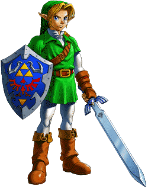
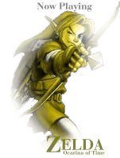
Après un logo Nintendo 64 qui montre que la machine a bien évolué depuis sa sortie, on débouche sur une superbe animation ou l'on voit Link sur son cheval au galop.
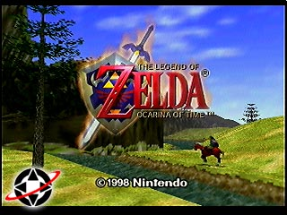
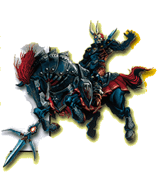
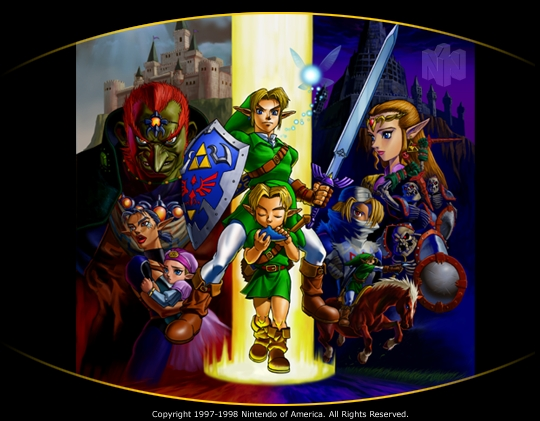
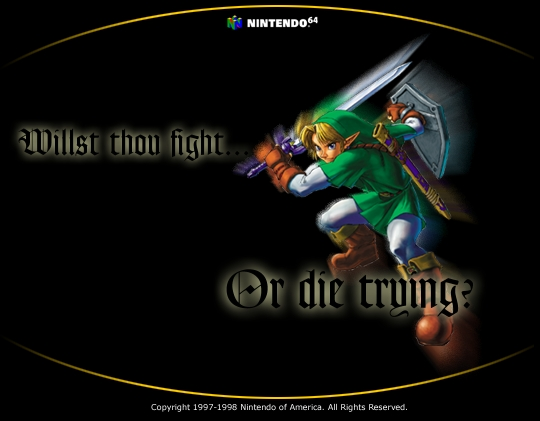
Quelques Images du jeu :
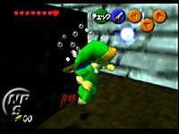
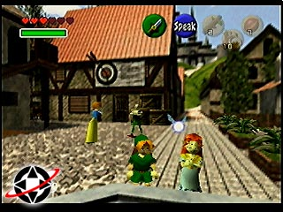
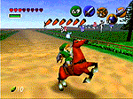
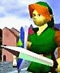
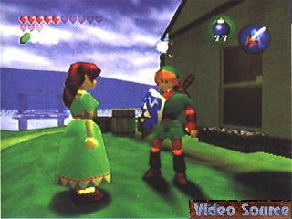